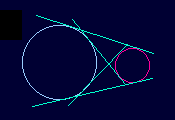
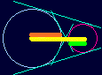
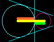
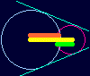
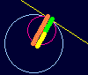
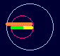

|
Some common tangents of two circles can be drawn. You can find that the number of them varies by the condition of the distance and radii of two circles. Using the applet of Common Tangents, try to explore this relation to the commom tangents.
|
 |
|
In this applet you can explore the number of common tangents, dragging to change the radii or to move the circles. The button of@"Init"@is for replacing the figure in the initial state. If you click the button of@"Auto",@the circles are moving automatically, and then you can enjoy their performance.
|
|
The number of commom tangents depends on the relation between the distance and radii of two circles. Given two circles of radii a, b (a>b), with d as the distance between their centers, the following figures show the relation of them to the common tangents.
|
|  |  |
| d > a + b | d = a + b |
|  |  |  |
| d < a + b | d = a - b | d < a - b |